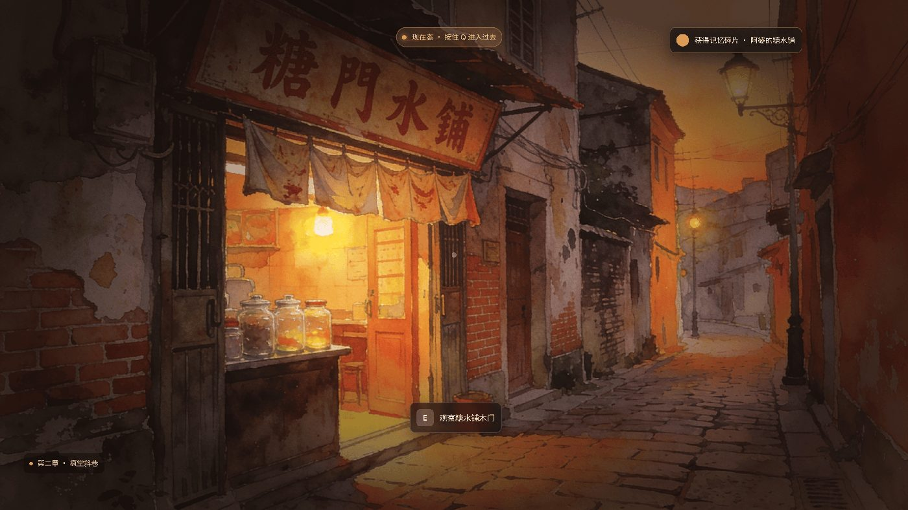
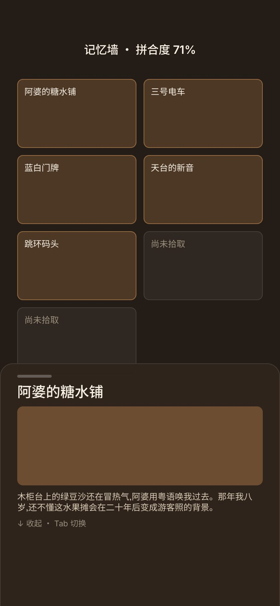

项目 01 · 规模最大 · 最贴近技术策划日常
澳里·光景
一个以「时间叠层」为核心差异化的解谜叙事游戏。这个项目真正的难点不在玩法， 而在于把设计侧想要的 8 个谜题，翻译成程序能按统一接口实现的配置结构—— 这正是技术策划每天做的事。
-
15,558C# 总行数（83 个文件）
-
204测试用例（23 个测试文件）
-
9可玩场景
-
Unity 66000.0.23f1
四个关键决策
把 8 个谜题收敛成 3 个原语
设计侧最初提的是 8 个各不相同的谜题。如果各自实现，就是 8 套判定逻辑、8 份接入代码、 8 倍回归成本。我把它们抽象为三个原语——Light（点亮）、Sort（排序）、Drag（拖拽归位）， 每个谜题变成一份配置加一个状态机实例。
收益不是"少写代码"，而是新增谜题从编码工作变成了数据工作， 设计侧可以自己加内容而不需要程序介入。
PuzzleConfig Schema：ScriptableObject 与 JSON 双通道
同一份结构定义，既能在 Unity 编辑器里以 ScriptableObject 形式可视化编辑， 也能以 JSON 形式被外部工具读写和版本管理。设计侧调数值不碰代码， 程序侧接数据不依赖编辑器操作。
用 asmdef 强制分层，而不是靠自觉
Core（Economy / Events / Input / Simulation / Subsystems / Time）与 Game（Audio / Config / Flow / Persistence / Presentation / Runtime）之间， 用 4 个程序集定义文件强制依赖方向。架构约束靠约定会腐化，靠编译器才可靠。
确定性模拟：让玩法结果可被自动验证
引入确定性模拟框架，保证同一输入序列产生同一结果。 这使「玩法逻辑正确」从只能手动试玩，变成了可以在测试里断言的事情。
测试覆盖了什么
我测的不是"功能能不能跑"，而是"扩展会不会破坏既有流程"。 这两件事的区别，决定了项目能不能长期迭代。
状态机
- Light / Sort / Drag 三原语状态机
- 非法转移与边界输入
系统
- 经济系统（Echo Economy）
- 存档与读取一致性
- 子系统守卫（Subsystem Guard）
内容完整性
- 关卡配置数据完整性
- 叙事配置校验
- 重启与可达性（避免玩家卡死）
表现与流程
- PlayMode 冒烟
- 音效播放
- 对象池与内存复用
设计交付
以下均为本人产出的设计交付稿，非 AI 生成。





面试时会怎么讲这个项目
问：8 个谜题为什么收敛成 3 个原语？
降低判定与接入的分支数，让新增谜题变成数据工作而非编码工作。这是技术策划的核心价值——
不是自己实现得快，是让别人不需要你也能加内容。
问：你的测试和别人有什么不一样？
我测的不是功能能不能跑，是扩展会不会破坏既有流程。
重启可达性、配置完整性、子系统守卫这类用例，保证的是"下一个内容加进来时不会炸"。